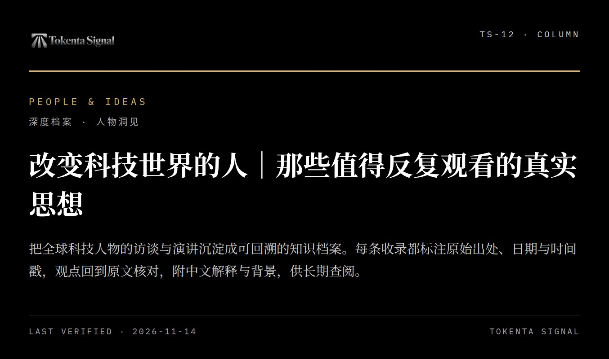
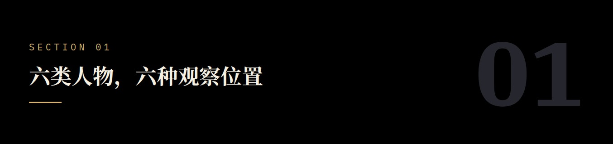
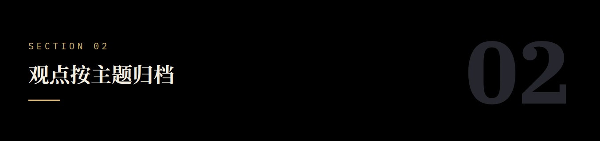
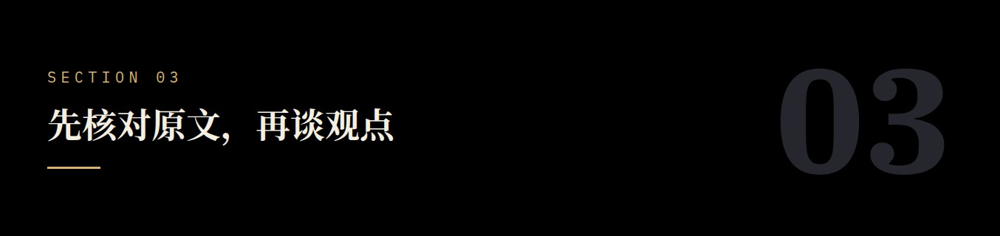
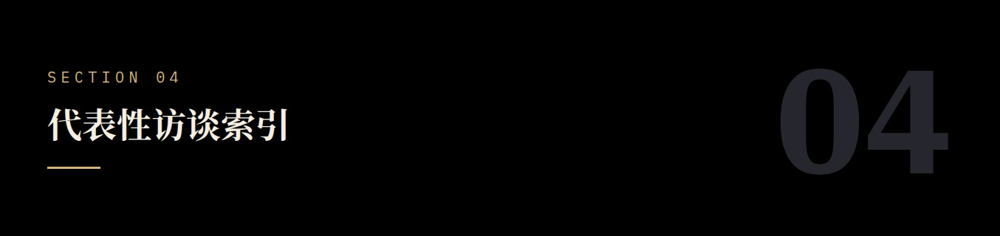
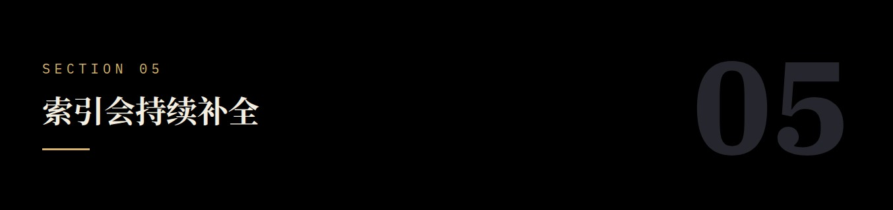

科技产业的走向，先出现在少数人的判断里，然后才变成产品、财报与新闻标题。模型路线如何选，资本往哪里投，风险要不要提前管，这些决定在公开访谈与演讲里往往留有原话。人物洞见栏目做的事，是把散落在全球各处的访谈、演讲与对话逐条收回来，核对原文，配上中文解释与背景，沉淀成可以反复查阅的人物档案。
本栏目有一条硬规矩，收录的每条观点必须能回溯到原始采访或演讲页面，注明日期，出处不明的转述与二手剪辑不收。找不到原始页面的条目宁可空着，也不用拼凑的引言填充。读者在这里读到的每句话，都可以点回原文自己验证。

栏目按人物所处的位置分六类收录。第一类是 AI 研究者，他们决定技术路线与安全边界，发言常带有论文与实验的语境。第二类是科技创业者，他们在资源有限时做取舍，访谈里谈的失败与转向比成功叙事更有参考价值。第三类是全球科技企业 CEO，他们的公开表态直接影响产品节奏、资本开支与行业预期，需要结合公司同期动作一起读。
第四类是投资人与产业研究者，他们提供资本视角，判断哪些技术值得下注，哪些热度只是周期。第五类是科学家与工程师，他们离具体问题最近，谈的是方法、约束与未解难题。第六类在五类之外单独标注，即跨界的研究型创始人，这类人同时出现在实验室与董事会，观点兼有技术深度与商业后果。分类的意义在于提醒读者，同一句话从不同位置说出来，权重并不相同。
六类之外还有一类常被混读的发言，即财报电话会与产品发布会上的管理层表态。这类发言有合规与宣传约束，信息密度低于长访谈，本栏目只作背景材料引用，不单独建档。建档的门槛是时长与形式，长访谈、主题演讲与公开对话优先，因为只有在足够长的篇幅里，一个人才会把判断的前提、犹豫与例外讲出来，短句式的表态没有这些层次。

人物档案同时按观点主题打标签，方便横向比较。当前设有六组主题，能力边界，讨论模型与智能的上限在哪里；安全与治理，讨论风险、权力集中与监管；科学与发现，讨论 AI 如何进入生物、物理与材料等研究领域；商业与组织，讨论公司战略、并购与产品取舍；基础设施，讨论算力、能源与供应链；职业与方法，讨论研究者与工程师的工作方式。同一主题下把不同人物的原话并排放置，分歧点会自己浮现，这比单看一家之言更接近事实。
每篇人物专题的固定结构为八项，人物身份、原始采访或演讲、采访日期、真实观点、中文解释、核心观点时间戳、背景和上下文、对读者的启示。时间戳只在原始视频或官方文字稿能确认时填写，确认不了的标注待补，不估算，不凑数。

人物内容最容易失真的环节在转述。一句原话经过剪辑、翻译与标题改写，语气与限定条件常常被磨掉，最后剩下的金句与本人实际表达的判断可能相去甚远。本栏目的处理顺序固定，先定位原始页面，再逐段读原文或文字稿，确认说话人、场合与上下文，最后才写中文解释。解释与原文分开排版，读者可以随时对照。
同一位人物在不同年份的访谈也值得并排读。判断会随证据变化，实验室负责人在新模型发布前后的表态口径，创始人在融资前后的风险措辞，都有可观察的漂移。本栏目归档时保留每次访谈的原始日期，不用最新表态覆盖旧记录，时间线本身就是档案的一部分。读者顺着时间线读，能看到一个人的判断如何被现实修正，这种修正过程比任何单次结论都更有长期价值。

首批索引收录四条条目，三条已完成原文核验，一条因采访原文未定位降级为交易记录，覆盖企业 CEO、实验室负责人、公司总裁与科学家型创始人四个位置。三条已核验条目的共同点是原始页面公开可查，观点与原文逐句对应。其中两条给出了经官方文字稿确认的时间戳，一条的时间戳等待后台在原始视频页逐段核对后补入。
四条条目的出处构成也说明了本栏目的取材范围。两条来自带官方文字稿的长访谈节目，一条来自企业官方活动页面，一条为企业收购的交易记录，原采访条目因原文未定位降级。四种出处形态不同，核验标准一致，即页面公开、说话人明确、日期可查、观点可在原文中定位。达不到这四项的候选条目一律暂缓收录，宁可让索引短一些，也不让读者点开一条无法验证的记录。
Dario Amodei 谈扩展规律与能力上限
人物身份 Anthropic 联合创始人兼首席执行官，早年任 OpenAI 研究副总裁
原始采访 Lex Fridman Podcast 第 452 期长访谈，官方站点提供带时间戳的完整文字稿
采访日期 2024 年 11 月 11 日发布
真实观点 按能力曲线的速度外推，模型正在从本科水平走向博士水平，他判断 2026 或 2027 年可能达到强人工智能的关键节点，同时明确表示自己最担心的是权力集中与滥用
中文解释 他的判断建立在扩展规律之上，数据、算力与训练时长同步放大，能力随之平滑上升。他在节目开场说，我们正在迅速耗尽真正有说服力的阻碍理由，原文为 We are rapidly running out of truly convincing blockers，出现在文字稿 00:00:31 处
核心观点时间戳 00:00:00 至 00:01:22，官方文字稿已确认
背景与上下文 访谈发布时 Anthropic 刚推出 Claude 3.5 Sonnet 的计算机操作能力，行业正争论扩展是否见顶，他的表态是实验室负责人对这场争论的正面回应
对读者的启示 读 CEO 的时间表判断，要同时看他给出的前提条件。这段访谈的价值在于他把前提讲全了，曲线外推成立，结论才成立
观点与时间戳已于 2026-11-14 对照 Lex Fridman 官方文字稿逐项核验。
Demis Hassabis 谈自然的可学习性
人物身份 Google DeepMind 联合创始人兼首席执行官，2024 年诺贝尔化学奖得主
原始采访 Lex Fridman Podcast 第 475 期长访谈，官方文字稿，带说话人与时间戳
采访日期 2025 年 7 月 23 日
真实观点 他在诺贝尔奖演讲中提出一个猜想，自然界中能够被生成或被发现的任何模式，都可以被经典学习算法高效地发现并建模，访谈中他用 AlphaGo 与 AlphaFold 解释这条猜想的依据
中文解释 他的推理是，自然系统经过漫长的演化与选择留下了结构，结构意味着可学习的规律。蛋白质折叠与围棋的搜索空间大到无法穷举，模型仍然找到了路径，说明规律先于算法存在，算法只是把它重新发现出来
核心观点时间戳 00:02:32 起谈猜想的来由，00:06:17 起谈信息是宇宙的基本单位，两处均见官方文字稿
背景与上下文 这是他获诺贝尔奖后第二次做客该节目，访谈从他的诺贝尔奖演讲切入，讨论范围覆盖流体力学、视频生成模型与 P 与 NP 问题
对读者的启示 科学家型创始人的访谈值得慢读。他给出的判断带有可证伪的形式，日后 DeepMind 在新领域的结果会直接检验这条猜想
观点与时间戳已对照官方文字稿核验，采访日期已按官方页补入。
Greg Brockman 谈防守方为什么需要前沿模型
人物身份 OpenAI 总裁兼联合创始人
原始演讲 OpenAI 官方活动 Cyber at the Frontier 主题演讲，官方页面完整记录演讲内容与产品发布。官方页面未标注日期，OpenAI 官方 LinkedIn 相关帖为 11 月 10 日（UTC），活动日期待官方确认
采访日期 待确认（官方活动页未标日期，见原始演讲字段说明）
真实观点 他在主题演讲中发布 Daybreak Red Team 与 Defense Factory 两款安全产品，核心主张写在演讲的立场里，防守方需要前沿模型，因为攻击方已经有了
中文解释 这段演讲的语境是攻防两端都在用同一代模型。他的论证方式是把 OpenAI 自家防守流水线产品化，用产品存在本身来回应外界对前沿模型风险的质疑
核心观点时间戳 待补，官方页面为图文记录，无分段时间戳，需后台在演讲视频页核对后补入
背景与上下文 2026 年 11 月 12 日，四家非营利组织起诉五家前沿实验室，要求冻结更强模型的开发，美联社与 Politico 均有报道。演讲与诉讼在同一周出现，立场对照鲜明，本号第 227 期有完整记录
对读者的启示 企业高管的主题演讲要放在同日事件里读。孤立看是产品发布，放到诉讼背景里看，是一次完整的立场表态
出处与观点据 OpenAI 官方页面及本号第 227 期生产档案核验，时间戳待补。
Oura 收购 Counsel Health，Tom Hale 条目降级为交易记录
人物身份 Oura 首席执行官，智能戒指厂商负责人
原始采访 彭博社采访原文未定位，本条已降级为交易记录，不含采访观点
采访日期 2026 年 11 月 10 日收购公告同期
真实观点 本字段原记 Hale 的采访观点，因彭博原文未定位已撤下。交易事实为，Oura 于 2026 年 11 月 10 日宣布以 6.25 亿美元全现金收购 AI 基层医疗公司 Counsel Health
中文解释 保留本条是为了记录交易本身。收购把 Oura 的可穿戴数据与 Counsel Health 的医生网络接起来，标的是医疗服务入口。Hale 本人的判断等彭博原文定位后再补
核心观点时间戳 不适用，本条已降级为交易记录
背景与上下文 采访发生在 Oura 以 6.25 亿美元全现金收购 AI 基层医疗公司 Counsel Health 的公告日，此前数周该公司刚以市场不确定为由推迟了 IPO
对读者的启示 访谈类条目只收原文可回溯者。本条是这条规矩的一次实际执行，找不到原文就降级，不拿转载顶替
已按栏目规矩降级为交易记录，彭博原文定位后恢复为访谈条目，见 link_requirements。

需要如实说明的是，本号视频号积累了一批全球科技人物访谈视频，那部分档案目前只存在于视频号后台，尚未逐篇完成归类与时间戳标注，因此本篇索引暂不收录视频号条目，避免给出无法回溯的条目。后台归类完成后，视频号访谈会按同样的八项结构逐条补入本索引，并在每条下标明原始视频位置。
后续每篇人物专题都会回链到本页。本页是人物洞见栏目的总索引，新增条目按主题标签与人物类别两个维度同时归档，读者既可以顺着一个人读完他的全部公开判断，也可以顺着一个主题读完所有人的分歧。

01 按人物查，从索引进入单个人物专题，先看采访日期与背景，再读观点原文。
02 按主题查，用六组主题标签横向比较不同人物对同一问题的判断与分歧。
03 引用本栏目观点时请回链原始采访页面，本页面的中文解释为 Tokenta 编辑整理，不替代原文。
04 发现时间戳或出处有误，可通过 team@tokenta.space 反馈，核实后会在索引中修正并标注。

SOURCES · 来源与核验
[1] Lex Fridman Podcast 第 452 期 Dario Amodei 访谈官方文字稿
[2] Lex Fridman Podcast 第 475 期 Demis Hassabis 访谈官方文字稿
[3] OpenAI 官方 Cyber at the Frontier 页面，Greg Brockman 主题演讲记录
[4] Oura 官方博客，收购 Counsel Health 公告，2026 年 11 月 10 日
[5] 本号第 211 期与第 227 期生产档案，含 Tom Hale 彭博采访记录与 Brockman 演讲记录
[6] TechCrunch 报道，Oura 以 6.25 亿美元收购 Counsel Health，2026-11-10
LAST VERIFIED · 2026-11-14
TOKENTA SIGNAL
Extracting signals from the noise. 本栏目内容来自公开来源并标注核验日期，不构成任何投资建议。
signal.tokenta.space · team@tokenta.space